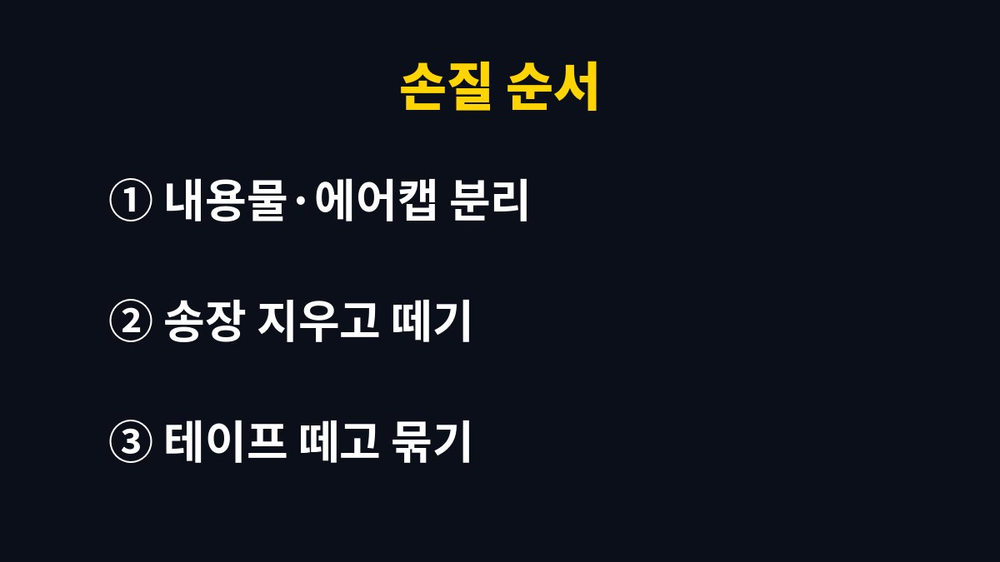

택배 스티로폼 분리배출은 테이프와 송장을 떼어 낸 흰색 스티로폼만 재활용품으로 내놓고, 색이 있거나 음식물이 밴 것은 종량제봉투로 보내면 된다.
종이 상자는 종이류, 스티로폼은 발포합성수지류로 따로 담는다.
배출 요일에 한꺼번에 들고 나가면 테이프 떼는 데만 한참 걸린다.
그래서 나는 택배를 뜯는 그 자리에서 손질을 끝낸다.
스티로폼은 수거된 뒤 녹여서 다시 원료로 쓰인다.
이때 테이프, 송장 스티커, 코팅 라벨이 붙어 있으면 그 조각이 함께 녹아 품질을 떨어뜨린다.
환경부 분리배출 가이드라인도 내용물을 비우고 테이프와 운송장 같은 부착물을 떼어 배출하라고 안내한다.
눈으로 보기에는 작은 스티커 한 장이지만, 수거된 스티로폼은 한꺼번에 녹이기 때문에 섞인 조각을 나중에 골라낼 방법이 마땅치 않다.
선별장에서 손으로 떼는 일이 생기는 것도 그래서다.
첫 번째는 떼지 않은 테이프와 송장이다.
두 번째는 생선이나 고기 국물이 스며든 얼룩이다.
세 번째는 겉면에 색이 입혀졌거나 필름이 붙은 상자다.
이 셋 중 하나라도 해당하면 수거장에서 다시 걸러지거나 일반쓰레기로 처리된다.
아파트 수거장에서는 종이류, 비닐류, 스티로폼이 각각 다른 업체나 다른 차량으로 실려 가는 경우가 많다.
종이 마대에 스티로폼 조각이 섞이면 선별 과정에서 손으로 다시 골라내야 한다.
경비실에 다시 분리해 달라는 안내문이 붙는 것도 대부분 이런 경우다.
처음부터 칸을 맞춰 두면 서로 번거로울 일이 없다.
| 품목 | 배출 칸 | 손질 |
|---|---|---|
| 종이 택배 상자 | 종이류 | 테이프·송장 떼고 펼쳐 접기 |
| 흰색 스티로폼 상자 | 발포합성수지(스티로폼) | 테이프·송장·라벨 제거 |
| 색이 있거나 코팅된 스티로폼 | 종량제봉투 | 재활용 원료로 쓰기 어려움 |
| 냄새·기름이 남은 스티로폼 | 종량제봉투 | 헹궈도 얼룩이 남을 때 |
| 에어캡(뽁뽁이) | 비닐류 | 테이프 떼고 모아서 배출 |
종이 상자라도 겉면 전체에 비닐 코팅이 된 선물 상자는 종이로 재활용하기 어렵다.
손으로 찢었을 때 얇은 비닐 막이 따로 벗겨지면 코팅된 상자로 보면 된다.
상자 안에 든 구겨진 종이 완충재는 테이프만 없으면 종이류로 함께 낸다.
반대로 비닐로 감싼 공기 주머니 완충재는 바람을 빼서 비닐류로 보낸다.
표에서 헷갈리기 쉬운 것은 컵라면 용기처럼 얇은 스티로폼이다.
국물 자국을 씻어 내고 겉에 붙은 비닐 라벨을 떼면 택배 스티로폼과 같은 칸에 함께 낼 수 있다.
반대로 전자제품 상자 안에 든 단단한 모양의 완충재는 크기가 커서 그대로 내놓기 부담스러운데, 이것도 흰색이고 부착물이 없으면 스티로폼으로 배출한다.
크기 때문에 수거 자리에 들어가지 않으면 관리사무소에 놓을 곳을 먼저 묻는다.
송장 스티커는 대부분 코팅된 감열지라 종이류로 넣지 않는다.
이름, 전화번호, 동·호수가 그대로 찍혀 있어서 상자째 내놓으면 수거장에서 누구나 읽을 수 있다.
나는 송장 위를 유성 매직으로 여러 번 덧칠하거나, 개인정보 부분만 손으로 잘게 찢어 버린다.
잘 떨어지지 않는 송장은 종이 상자 쪽을 송장 크기만큼 오려 내서 같이 버린다.
시중에 개인정보를 가리는 도장도 있지만 매직 한 자루면 충분하다는 것이 내 판단이다.

생선이나 고기가 담겨 왔던 스티로폼은 헹구는 방법에 따라 결과가 갈린다.
찬물로 먼저 핏물과 국물을 흘려 보내고, 주방세제를 조금 묻힌 수세미로 안쪽 모서리를 닦은 뒤 다시 헹군다.
물기를 뺀 상자를 베란다에서 하루 정도 말리면 비린내가 거의 남지 않는다.
이렇게 해도 기름 얼룩이 누렇게 배어 있거나 냄새가 그대로라면 미련 없이 종량제봉투로 보낸다.
덜 헹군 상자 하나가 같은 자루에 담긴 다른 스티로폼까지 재활용이 어렵게 만들기 때문이다.
택배가 몰리는 연말에는 상자가 금방 쌓인다.
나는 현관 옆에 종이 상자를 세워 꽂아 두는 자리를 따로 정해 두었고, 펼친 상자는 그 자리에만 모은다.
배출하는 날에는 그 묶음만 들고 나가면 돼서 손이 훨씬 덜 간다.
오래 붙어 있던 테이프는 떼다 보면 스티로폼 겉면이 같이 뜯겨 나온다.
나는 이럴 때 테이프가 붙은 귀퉁이만 칼로 잘라 종량제봉투에 넣고 나머지를 재활용으로 낸다.
부피를 줄이겠다고 잘게 부수는 것은 권하지 않는다.
알갱이가 날려 수거하는 쪽이 더 번거로워지고, 베란다 바닥 청소거리만 늘어난다.
테이프를 뗄 때는 드라이어의 따뜻한 바람을 잠깐 쐬어 접착제를 무르게 한 뒤 천천히 당기면 겉면이 덜 뜯긴다.
다만 스티로폼은 열에 약해서 바람을 한곳에 오래 대면 표면이 오그라든다.
몇 초씩 끊어서 대고, 손으로 만져 미지근한 정도에서 멈춘다.
라벨 스티커도 같은 방법으로 떼면 끈적임이 덜 남는다.
신선식품이 담겨 오는 상자 중에는 스티로폼 겉에 은박이나 필름을 입힌 것이 있다.
필름이 손으로 깨끗하게 벗겨지면 벗긴 뒤 스티로폼으로 내고, 벗겨지지 않으면 종량제봉투로 보낸다.
애매할 때는 아파트 관리사무소나 구청 청소행정 부서에 한 번 묻는 것이 가장 빠르다.
배출 요일과 스티로폼을 묶는 방식은 지자체마다 다르다.
우리 동네처럼 스티로폼을 투명 비닐에 담아 내라는 곳도 있고, 끈으로 묶어 그대로 쌓아 두라는 곳도 있다.
사는 구청 누리집의 생활폐기물 배출 안내에서 우리 동네 요일표를 한 번 확인해 두면 된다.
참고 자료: 환경부 「재활용품 분리배출 가이드라인」(2026년 11월 확인)
※ 2026년 기준 공공기관 안내를 바탕으로 정리한 글이며, 집 구조와 제품에 따라 결과가 다를 수 있어 제품 설명서를 함께 확인하길 바란다.